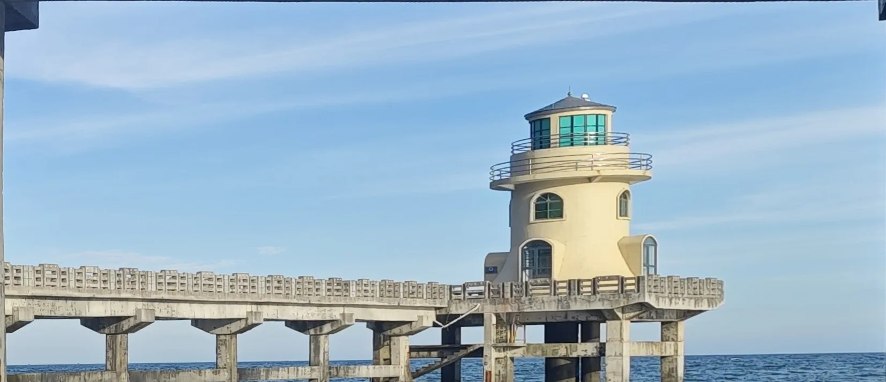

CHAOZHOU, SHANTOU & NAN'AO
潮州 · 汕头 · 南澳
潮州古城的寺院与桥，汕头的骑楼街区，再到南澳岛的海岸与灯塔。
2025.08.26 — 08.29航班 · 铁路 · 公交 · 缆车
潮州古城的寺院与桥，汕头的骑楼街区，再到南澳岛的海岸与灯塔。
放大地图查看照片
航班 · 铁路 · 公交 · 缆车航班铁路 / 轨道交通巴士
公共交通按线路或途经站点绘制，均为行程示意；未记下的具体班次留空。航班连线非实际飞行轨迹。
每日记录 4 天
DAY 01
潮州古城
航班、铁路、步行走过牌坊街与开元寺，来到广济楼和广济桥，晚上到西湖边。
→→→→→→→
DAY 02
潮州 · 汕头
铁路、步行上午继续在潮州街巷停留，经潮汕站转往汕头，夜晚走过小公园骑楼街区。
→→→→
DAY 03
南澳海岸
公交、步行沿着南澳岛海岸前行，经过海滩与钱澳湾灯塔，傍晚看红色灯塔和南澳大桥。
→→
DAY 04
礐石 · 汕头返程
缆车、航班沿礐石的山林与海湾停留，回到汕头骑楼街区，之后前往机场返程。
→→→
潮州牌坊街的街口08.26 · 15:55 潮州古城与牌坊街蓝天下的潮州开元寺08.26 · 16:34 潮州开元寺广济楼的城门与屋檐08.26 · 16:58 广济楼与广济桥暮色中的广济楼08.26 · 17:44 广济楼与广济桥潮州西湖的夜色08.26 · 20:43 潮州西湖潮州古城里的街巷08.27 · 10:50 潮州古城与牌坊街潮州的一盘卤鹅08.27 · 12:31 潮州古城与牌坊街经潮汕站转往下一程08.27 · 15:41 潮汕站汕头市区的湖畔建筑08.27 · 17:52 汕头市区夜晚亮灯的小公园骑楼街08.27 · 21:09 汕头小公园与骑楼街区海面上延伸的南澳大桥08.28 · 11:30 南澳大桥钱澳湾的灯塔与碧蓝海面08.28 钱澳湾灯塔夕阳中的南澳海边灯塔08.28 南澳海岸南澳海岸边的红顶塔楼08.28 · 14:05 南澳岛海岸岛屿与碧蓝的海水08.28 · 14:51 南澳岛海岸南澳海边的石墙08.28 · 15:21 南澳岛海岸钱澳湾灯塔08.28 · 17:19 钱澳湾灯塔傍晚的南澳大桥08.28 · 17:40 南澳大桥隔着海湾看向汕头08.29 · 11:01 礐石风景区山脚下的旧式建筑与池塘08.29 · 11:42 礐石风景区从礐石山上望向汕头海湾08.29 · 12:15 礐石风景区白天的汕头骑楼街区08.29 · 15:38 汕头小公园与骑楼街区当地的一盘蚝烙08.29 · 16:37 汕头小公园与骑楼街区 暂无照片。
NOTES FROM THE ROAD
旅行随记
CHAOZHOU, SHANTOU & NAN'AO
或许是受到“潮汕”一词的影响，我总以为潮州和汕头是相似的，但事实上又并非如此。
潮州给我的感觉像是一座大型的博物馆。潮州古城并不像我印象里的那些充斥着各种奇怪小吃店的古镇，而更像是一款等待玩家自由探索的开放世界游戏。广济桥、镇海楼、开元寺、牌坊街，随处走走就能发现各种各样的古建筑，讲述着潮州的历史。穿梭于这些建筑之间是四通八达的小巷，小巷两边仍旧保留着民居，相比于某些过分商业化的古镇，潮州古城还保留着部分生活化的气息。
汕头相比潮州显得“近代”很多，这当然也得益于其开埠的历史。小公园虽然也像潮州古城一般，各处都有秘密等着游客探索；然而汕头讲述的却是一段近代对外交流史。无论是代表着汕头作为通商口岸之一的潮海关旧址，或是在对岸礐石留下来的外国领事馆，都标志着潮汕一段辉煌、屈辱、无奈的对外交流史。